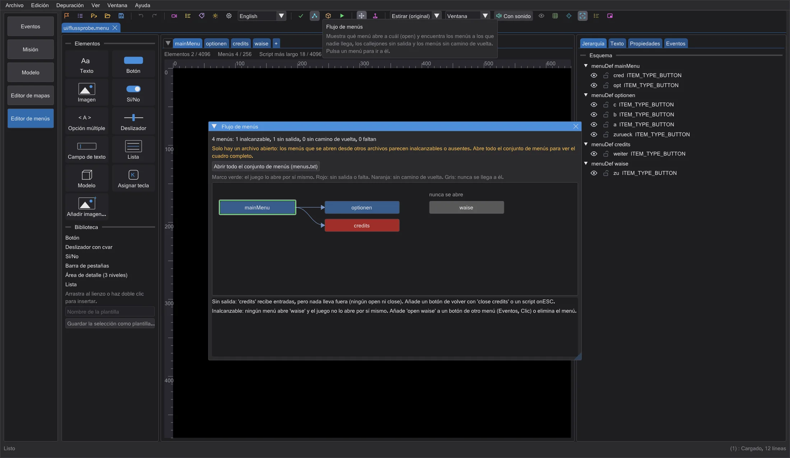
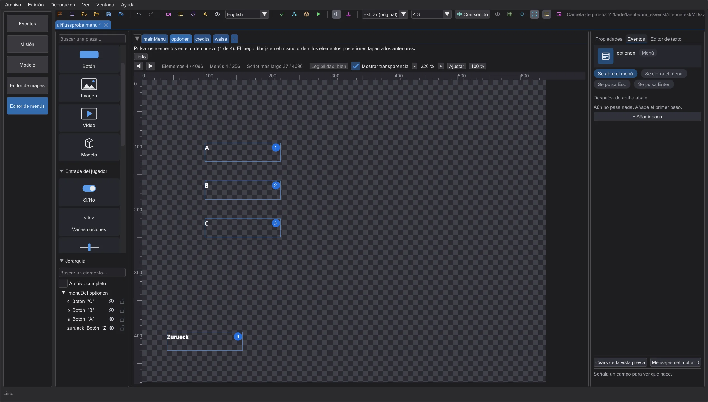
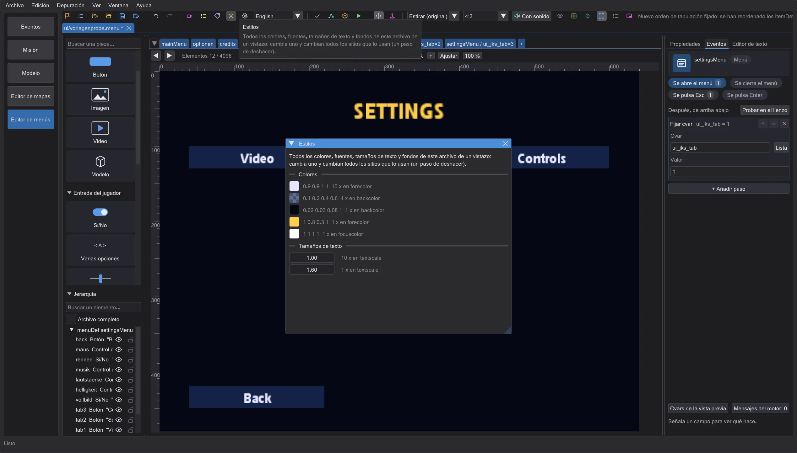
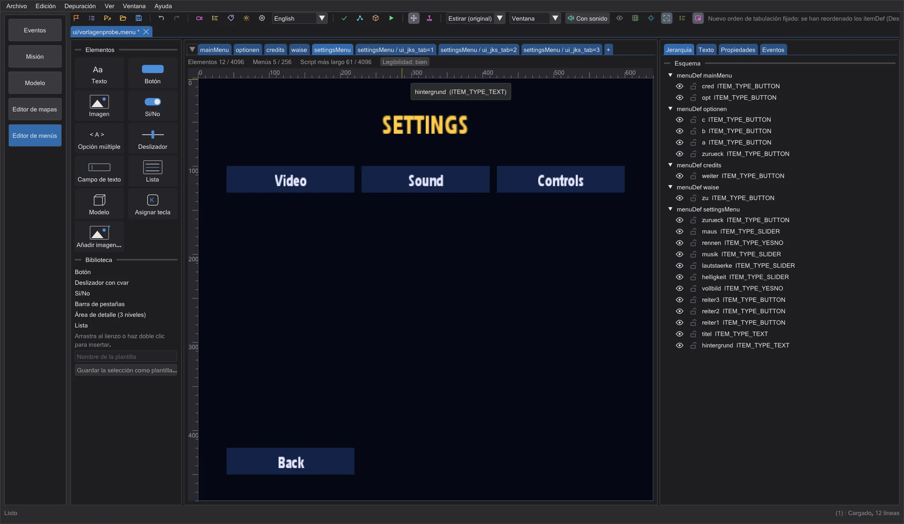
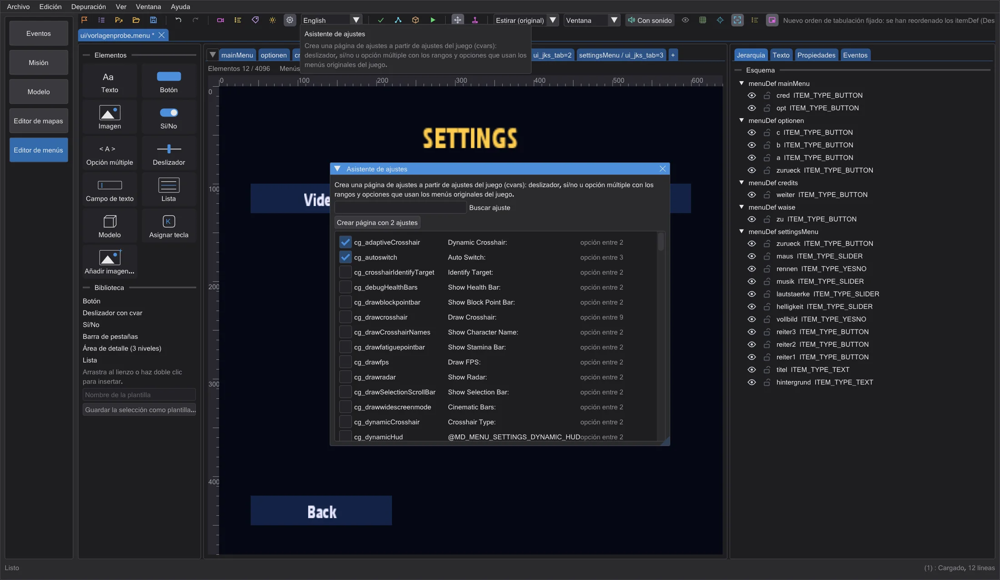
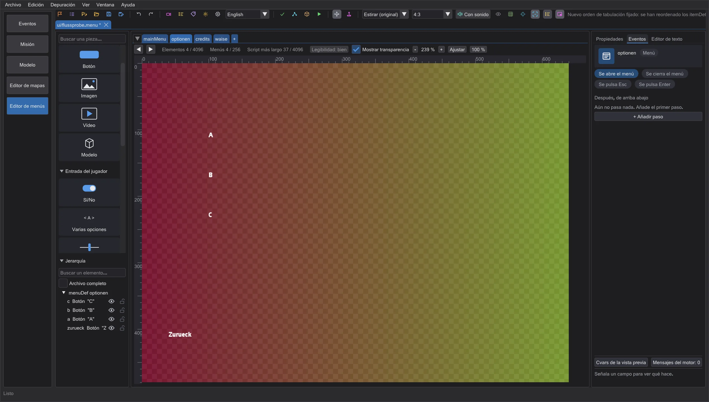
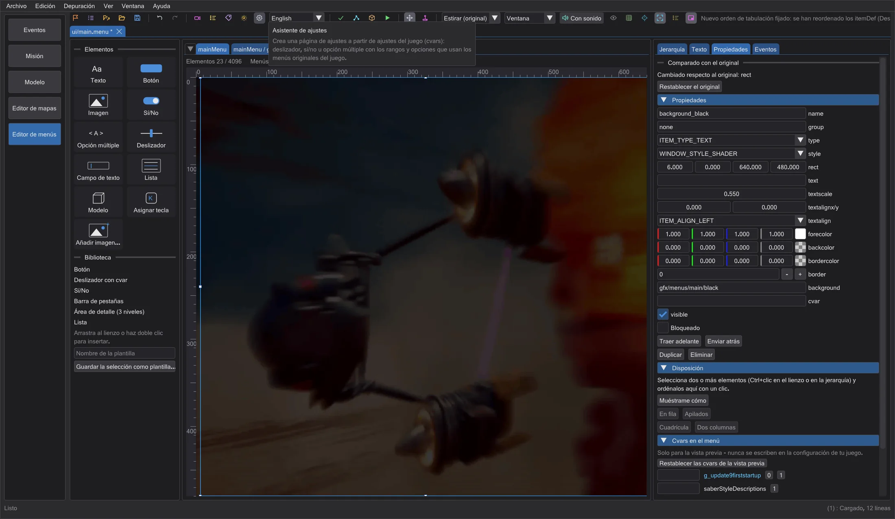

Editor de menús: flujo, orden de tabulación, estilos y plantillas
Mira qué menú abre a cuál y dónde se atascan los jugadores, fija el orden del teclado con clics, cambia colores y fuentes en todas partes a la vez, empieza con menús ya hechos o con un asistente de ajustes, calca un diseño sobre una imagen de referencia y restablece elementos al original del juego.
Flujo de menús#

Flujo de menús en la barra muestra cada menú de los archivos abiertos como una caja y cada open como una flecha, columna a columna desde los menús que abre el propio juego (marco verde: el menú principal, la pantalla de carga, los menús durante la partida, tomados del código del motor). Las cajas rojas son callejones sin salida (reciben entradas, pero nada lleva fuera) o destinos que ningún archivo abierto define; las naranjas se abren desde otro menú pero no tienen camino de vuelta (ningún close de sí mismas, ningún onESC, ningún open del menú del que vienen); las grises nunca se alcanzan. La lista de abajo dice con palabras sencillas qué hacer. Pulsa una caja o una línea de la lista para ir a ese menú. Abre antes todo el conjunto de menús; si no, los menús de otros archivos parecen ausentes.
Orden de tabulación#

Orden de tabulación pone un número en cada elemento que puede recibir el foco del teclado, en el orden que usa el motor (Menu_SetNextCursorItem: el orden de los itemDef, sin decoraciones, elementos ocultos ni elementos desactivados por una cvar; sin foco, el juego empieza por el segundo elemento del archivo). Para cambiarlo, pulsa los elementos uno tras otro en el orden nuevo: tras el último clic, el editor reordena los itemDef (un paso de deshacer). El juego dibuja en el mismo orden, así que un elemento posterior queda encima de uno anterior; los elementos que no pueden recibir el foco se quedan donde están.
Estilos#

Estilos reúne cada color (forecolor, backcolor, bordercolor, outlinecolor, focusColor, disableColor, descColor), fuente, tamaño de texto y fondo del archivo, los más usados primero. Cambia un valor y cambian a la vez todos los sitios que lo usan, como valores normales en el .menu (los espacios, comentarios y comillas se mantienen; un paso de deshacer). Los valores de archivos #include o de macros se cuentan, pero se quedan como están.
Plantillas y asistente de ajustes#

El + junto a las páginas ofrece Página vacía o un menú entero: Menú principal (el juego lo abre al empezar), Página de ajustes con pestañas, Créditos y Pantalla de carga (el juego la muestra mientras carga). Solo usan palabras clave que lee cualquier versión del juego; el menú principal y la pantalla de carga reciben los nombres que busca el motor (en un jugador mainMenu y loadscreen, en multijugador main y Connect), y el menú principal abre las plantillas de ajustes y de créditos: el flujo de menús muestra el resultado sin problemas.

Asistente de ajustes lists every game setting (cvar) that the original menus of the game offer, with the control they use there: a slider with its range, yes/no, or a choice with its entries. Tick the settings you want and click the button below the search field - the editor adds a settings page with these controls, a title and a back button. The list has three columns - setting, control and text; drag a column border to widen it, a cut-off text shows in full when you point at it.
Imagen de referencia, original y límites#

Imagen de referencia pone un PNG, JPG o TGA semitransparente sobre el lienzo, bajo el menú o, cuando un fondo a pantalla completa lo tapa, encima (Sobre el menú), con Opacidad ajustable. Es solo una ayuda para dibujar y nunca va al menú ni al pk3.

Para un menú del juego, las Propiedades muestran en Comparado con el original si el elemento seleccionado difiere del archivo original del juego y en qué palabras clave; Restablecer el original vuelve a poner el itemDef original (un paso de deshacer). Bajo las páginas, una línea muestra lo lleno que está el menú respecto a los límites de la versión del juego (elementos por menú, menús y el script más largo): naranja a partir del 80 por ciento, rojo en el límite, porque por encima el juego descarta el resto sin avisar.
Junto a los límites, Legibilidad cuenta avisos con valores orientativos del editor (no límites del juego): texto de menos de 8 puntos en la pantalla de 640 x 480, contraste por debajo de 3:1 en áreas rellenas, y textos que caben en su campo en un idioma del juego pero no en otro (medidos con las fuentes del juego y los textos de cada idioma de los datos del juego). Pasa el ratón por encima para ver la lista con soluciones; pulsa para seleccionar el siguiente elemento con un aviso.
Cerrar una pestaña con cambios sin guardar ahora pregunta antes: guardar, cerrar sin guardar o cancelar.